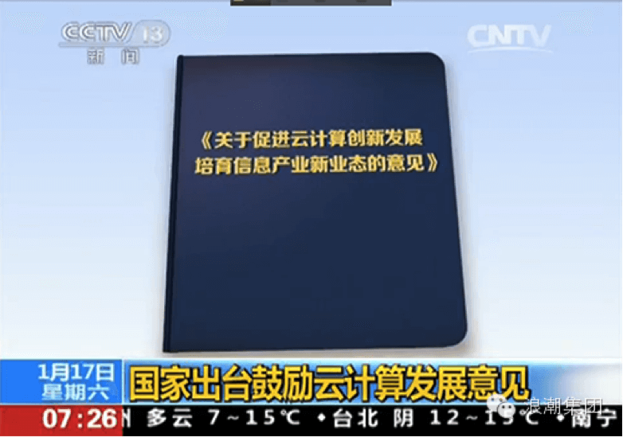
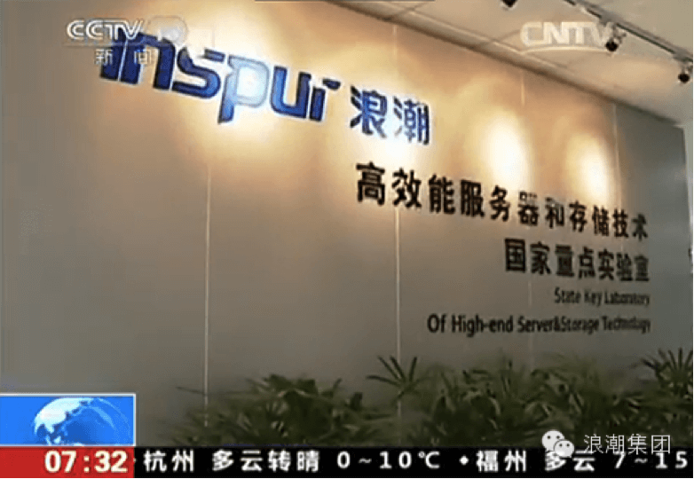

『朝闻天下』国家出台鼓励云计算发展意见、政府购买云服务IT企业忙转型
1月17日，央视朝闻天下播出《国家出台鼓励云计算发展意见》、《政府购买云服务IT企业忙转型》。
央视【朝闻天下】新闻相关链接：http://news.cntv.cn/2015/01/17/VIDE1421452441266742.shtml
目前，我国云计算在发展过程中遇到了一些问题，比如像数据能力薄弱、还有数据资源开放共享不够、数据中心无序发展等。昨天，国务院印发了《关于促进云计算创新发展培育信息产业新业态的意见》，这个意见将引导云计算健康发展。
对于我国以后怎么发展云计算《意见》给出了明确的答案。

首先，发展公共云计算服务，也就是鼓励IT企业建设云平台，提供计算、存储资源租用和应用软件开发等服务，鼓励企业购买这些云服务，降低成本。对于政府部门，更要加大购买云服务的力度，大幅减少政府自建数据中心的数量，实现各领域政务信息系统的共建共用。
其次，要充分利用云计算平台聚集的大量数据资源。在保障信息安全和个人隐私的前提下，探索地理、人口、知识产权等管理机构的数据资源向社会开放。并且政府部门间数据要共享，在公共安全、疾病防治、灾害预防、就业和社会保障、交通物流、教育科研、电子商务等领域，开展基于云计算的大数据应用示范。
对于很多地方纷纷上马云计算产业园，存在无序发展等问题，意见也明确，今后将加强全国数据中心建设的统筹规划，引导大型云计算数据中心优先在能源充足、气候适宜、自然灾害较少的地区建设，杜绝地方盲目建设数据中心和相关园区。
现在，我们会经常提到云、云计算、云服务，通过一个短片来了解一下……
过去，人们为了喝水，各家各户都挖了水井。而现在社会，有了水库、自来水公司，每家每户铺设了自来水管，人们一拧水龙头就能喝上干净、新鲜的水了。如果我们把水管看成通信网络，把水龙头看做我们的手机、平板、个人电脑，那么自来水公司的各类水处理设备和水源就是云，从水源地采水、消毒、净化、存储的过程就是云计算。而把自来水送达到家里，并按照用户的用水量收费就是云服务。云计算和云服务拥有像自来水一样的优点，比如便捷，云服务可以按需购买使用；价低，购买云服务不用自己买服务器花钱维护；随处可达，我们存放在云上的所有数据在任何地点、任何终端都可以有效的访问到，并且可以全国调配计算资源。除了这些，云计算还拥有比自来水更多的优点，因为在云计算的基础上，可以提供视频、图片、文字等各类数据服务，还可以提供金融、健康、交通、教育、电子政务、电子商务等各类行业性的云服务。一句话，云计算为我们社会发展、企业运行、人们生活提供了丰富多彩的应用和服务，已经成为当今社会最主要的发展驱动力之一。
云计算到底能够做什么，给我们的生活带来哪些变化，和经济发展又有什么关系呢。接下来，我们先要去的地方是山东济南，看一看云给当地带来的变化……
这里是济南的一家企业建设的云计算数据中心，可服务对象却是济南市的各级政府部门，被形象的成为济南政务云平台。今年以来，济南的各级政府部门不再自己买设备建设独立的数据中心，而是通过购买云服务的模式，把各自的政务数据上传到这个政务云平台上。
济南市经信委副主任赵炳跃：“原来各个部门在信息化工程建设的时候，一项工程就相当于自己要买地，要造一座房子，然后装上信息化应用，现在不需要了。现在直接到信息化主管部门来申请，他需要几间房子，就是说他需要多少的云计算资源。”
赵主任介绍说，目前济南市的52个政府部门、300多项业务应用采用购买云服务的方式，市、县、乡三级政府部门都在进行数据上云的工作，70%的部门转入了云计算这种模式，这使济南市的电子政务建设的成本降低了20%左右。除了节约成本，政府推进购买云服务更看中的是政务云里聚集的政务数据资源。

济南市经信委副主任 赵炳跃：“这个政务数据以后作为社会下一步要进行大数据发展一些原始的、权威的基础数据库，通过一定的程序，进行开放一部分、共享一部分，这样能衍生出很多的一些应用项目出来，比如说通过地理信息系统、交通管理系统、停车管理系统，我可以产生出交通诱导的APP。”

IT企业不卖设备建平台，政府则不买设备买服务，这种模式正在全国推开，这也让我国的许多大型IT设备供应商加快了转型的步伐，我国最大的、市场份额占到半壁江山的云服务器企业——浪潮集团，已经打起了卖服务的主意。
浪潮集团董事长 孙丕恕：“原来我们都是帮助用户去建云中心，我们给你们供设备、供系统、供方案，我们现在自己建云中心，针对市场这些需求，我们也有差异化，比方针对政府跟企业，我们也建云中心，给政府、企业提供这个服务，我们叫云服务。”
相关媒体链接
[朝闻天下]国家出台鼓励云计算发展意见
- 新闻链接
- 动态新闻相关了解更多...